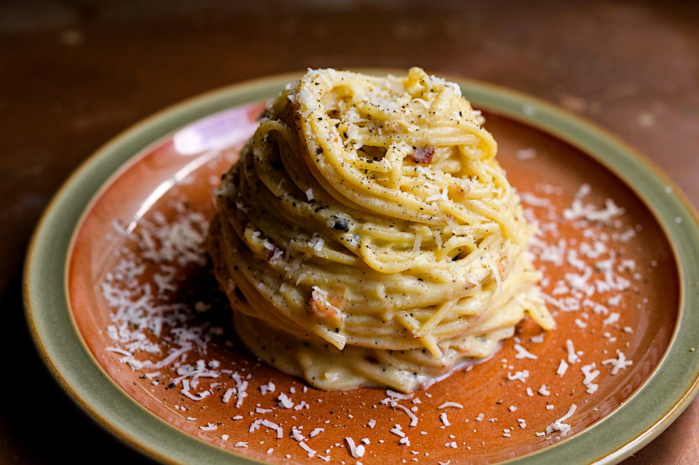
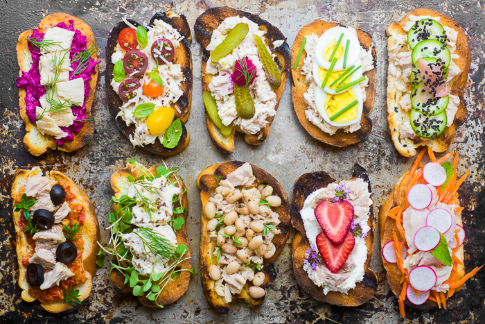

- Meat
Cow, Pig, Chicken
- Salad
Tomatos, Cabbage, Pickles
- Bread
English Muffin
- Pasta
Italian
- Cheese
Pecorino
- Vegetables
Plump, Garlic Cloves, Peeled
- Bread
English Muffin Toast
- Vegetables
Tomatos
- Meat
Salami, Fish
.tab-titles{
display: flex;
margin: 20px 0 40px;
}
.tab-links{
margin-right:50px;
font-size: 18px;
font-weight: 500;
cursor: pointer;
position: relative;
}
.tab-links::after{
content: '';
width: 0;
height: 3px;
background: #0004ff;
position: absolute;
left: 0;
bottom: -8px;
transition: 0.5s;
}
.tab-links.active-link::after{
width: 50%;
}
.tab-contents ul li{
display: block;
list-style: none;
margin-left: -40px;
}
.tab-contents ul li span{
color: #0004ff;
font-size: 25px;
}
.tab-contents{
display: none;
}
.tab-contents.active-tab{
display: block;
}